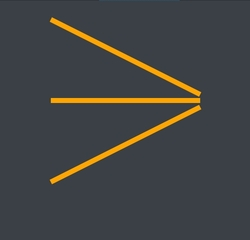
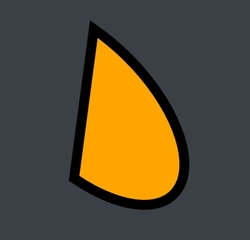

Rendering shapes

In this tutorial we are going to learn how to use Shapes and Brushes.
Shape elements are used for drawing vector graphics. A Shape has a Fill property, for the background color, and a Stroke property, for the outline color. Both properties are of type Brush. With the StrokeWidth property you can control the thickness of the outline.
NOTE
Shape.Stroke being a Brush rather than a Pen is an unfortunate inconsistency that is present in WPF. We decided to follow the same API in NoesisGUI. Internally, a Pen is indeed used to create the outline of the Shape. But rather than exposing the Pen directly, Shape defines Stroke as a Brush and exposes additional properties to tweak the settings of the internal Pen: StrokeStartLineCap, StrokeEndLineCap, StrokeThickness, and so on.
Brushes
Stroke and Fill properties need to be set to a valid Brush:
- Solid: to fill the target area with a single color. It has a simple Color property. Because of the type converter that converts string like "Blue" or "#FFFFFFFF" into SolidColorBrushes, they are indistinguishable from their underlying Color in XAML.
- Linear gradient: to fill an area with a gradient defined by colors at specific points along an imaginary line segment, with linear interpolation between those points.
- Radial gradient works like LinearGradientBrush, except it has a single starting point with each GradientStop emanating from it in the shape of an ellipse.
- Image: An image brush paints an area with a bitmap. The ImageSource property is meant to hold the bitmap content. There is a chapter dedicated to ImageBrushes in the Images Tutorial.
Shapes
NoesisGUI supports four basic shapes: Rectangle, Ellipse, Line and Path.
Rectangle
For rectangles or squares with or without rounded corners:

<StackPanel
xmlns="http://schemas.microsoft.com/winfx/2006/xaml/presentation"
VerticalAlignment="Center">
<Rectangle Width="200" Height="100"
Fill="Orange" Stroke="Black" StrokeThickness="10" Margin="4" />
<Rectangle Width="200" Height="100" RadiusX="10" RadiusY="30"
Fill="Orange" Stroke="Black" StrokeThickness="10" Margin="4" />
<Rectangle Width="200" Height="100" RadiusX="30" RadiusY="10"
Fill="Orange" Stroke="Black" StrokeThickness="10" Margin="4" />
<Rectangle Width="200" Height="100" RadiusX="100" RadiusY="50"
Fill="Orange" Stroke="Black" StrokeThickness="10" Margin="4" />
</StackPanel>
Ellipse
For drawing ovals or circles:
<StackPanel
xmlns="http://schemas.microsoft.com/winfx/2006/xaml/presentation"
VerticalAlignment="Center">
<Ellipse Width="200" Height="100"
Fill="Orange" Stroke="Black" StrokeThickness="10" Margin="4" />
<Ellipse Width="100" Height="200"
Fill="Orange" Stroke="Black" StrokeThickness="10" Margin="4" />
</StackPanel>
Line
For segments connecting two points:
<StackPanel
xmlns="http://schemas.microsoft.com/winfx/2006/xaml/presentation"
VerticalAlignment="Center">
<Line X1="100" Y1="50" X2="400" Y2="200" Stroke="Orange"
StrokeThickness="10" Margin="4" />
<Line X1="100" Y1="0" X2="400" Y2="0" Stroke="Orange"
StrokeThickness="10" Margin="4" />
<Line X1="100" Y1="150" X2="400" Y2="0" Stroke="Orange"
StrokeThickness="10" Margin="4" />
</StackPanel>
Path
For complex shapes:
<StackPanel
xmlns="http://schemas.microsoft.com/winfx/2006/xaml/presentation"
VerticalAlignment="Center">
<Path Fill="Orange" Stroke="Black" StrokeThickness="10"
Data="M 80,200 A 100,50 45 1 0 100,50 Z" />
</StackPanel>
Shapes are typically placed inside a Canvas because it supports absolute positioning of its child objects. The following example illustrates some of the basic shapes:
<Canvas
xmlns="http://schemas.microsoft.com/winfx/2006/xaml/presentation"
Height="300" Width="300" Background="LightGray">
<Line X1="30" Y1="30" X2="130" Y2="130" Stroke="Black" StrokeThickness="8"
StrokeStartLineCap="Round" StrokeEndLineCap="Round"/>
<Ellipse Canvas.Top="25" Canvas.Left="160" Height="120" Width="120"
StrokeThickness="4" Stroke="Black">
<Ellipse.Fill>
<RadialGradientBrush GradientOrigin="0.75,0.25">
<GradientStop Color="Yellow" Offset="0.0" />
<GradientStop Color="Orange" Offset="0.5" />
<GradientStop Color="Red" Offset="1.0" />
</RadialGradientBrush>
</Ellipse.Fill>
</Ellipse>
<Rectangle Canvas.Left="45" Canvas.Top="250" Height="150" Width="80" RadiusX="9" RadiusY="9"
Fill="LightBlue" StrokeThickness="2" Stroke="Green" StrokeDashArray="3,1">
<Rectangle.RenderTransform>
<RotateTransform Angle="-80" />
</Rectangle.RenderTransform>
</Rectangle>
</Canvas>
Apart from the details already commented above there are a few interesting points in the previous example:
- The start and end stroking caps are being modified through the StrokeStartLineCap and StrokeEndLineCap properties.
- Stroke dashing is set through the StrokeDashArray property.
- Elements can define their position inside the Canvas through attached properties or changing the RenderTrasform property.
Paths are complex shapes used to draw figures expressed in a special path markup syntax, a mini-language for making compact code. More information about this language can be found in the SVG specification. Inkscape is an amazing tool for converting from SVG files to XAML path format.
<Canvas
xmlns="http://schemas.microsoft.com/winfx/2006/xaml/presentation"
Height="440" Width="385">
<Path Fill="#FFF2F000" Stroke="#FF000000" StrokeThickness="9"
Data="m 608.07798 229.66418 c -88.45345 78.6253 -223.89753 70.658 -302.52283 -17.79545
-78.62529 -88.45345 -70.65799 -223.897534 17.79546 -302.522828 86.89794 -77.242622
219.53868 -71.098432 298.92375 13.846751 L 465.71429 69.505043 z">
<Path.RenderTransform>
<TranslateTransform X="-245.7143" Y="150.8571"/>
</Path.RenderTransform>
</Path>
<Ellipse Height="45" Width="45" Fill="#FF000000">
<Ellipse.RenderTransform>
<TranslateTransform X="201" Y="110"/>
</Ellipse.RenderTransform>
</Ellipse>
</Canvas>
NOTE
In Inkscape, to generate content that is compatible with NoesisGUI, Silverlight compatibility mode must be selected. This mode generates more efficient and compact content.